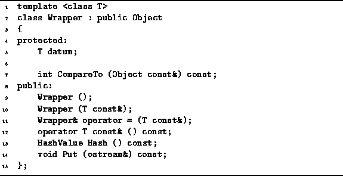

Data Structures and Algorithms
with Object-Oriented Design Patterns in C++
Data Structures and Algorithms
with Object-Oriented Design Patterns in C++One of the design goals of the C++ language is to treat user-defined data types and the built-in data types as equally as possible. However, the built-in data types of C++ do have one shortcoming with respect to user-defined ones--a built-in data type cannot be used as the base class from which other classes are derived. E.g., it is not possible to write:
class D : public int // Wrong!Consequently, it is not possible to extend the functionality of a built-in type using inheritance.
The usual design pattern for dealing with this deficiency
is to put instances of the built-in types
inside a wrapper class
and to use the wrapped objects in place of the built-in types.
Program  illustrates this idea.
The class Wrapper<T> is a concrete class which is
derived from the abstract base class Object.
It is also a generic class,
the purpose of which is to encapsulate an object of type T.
Each instance of the Wrapper<T> class contains a single member variable
of type T called datum.
illustrates this idea.
The class Wrapper<T> is a concrete class which is
derived from the abstract base class Object.
It is also a generic class,
the purpose of which is to encapsulate an object of type T.
Each instance of the Wrapper<T> class contains a single member variable
of type T called datum.

Program: Wrapper<T> Class Definition
 Copyright © 1997 by Bruno R. Preiss, P.Eng. All rights reserved.
Copyright © 1997 by Bruno R. Preiss, P.Eng. All rights reserved.